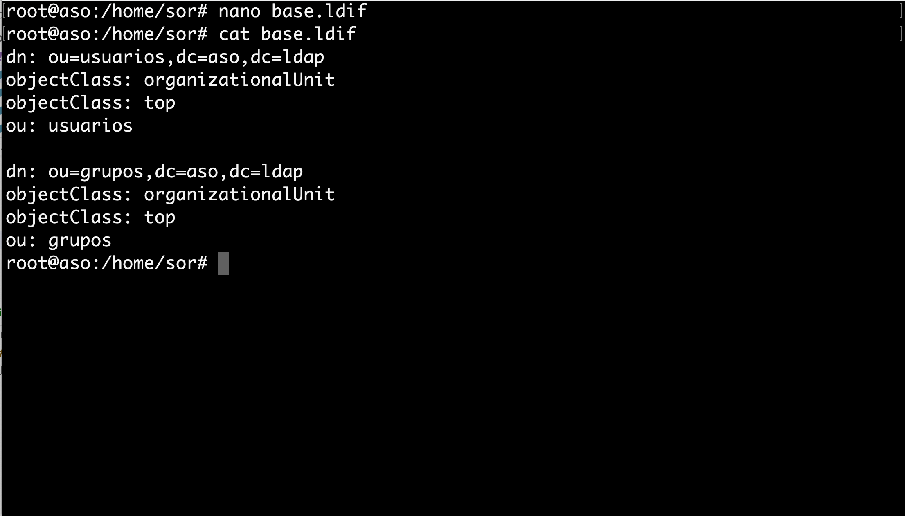
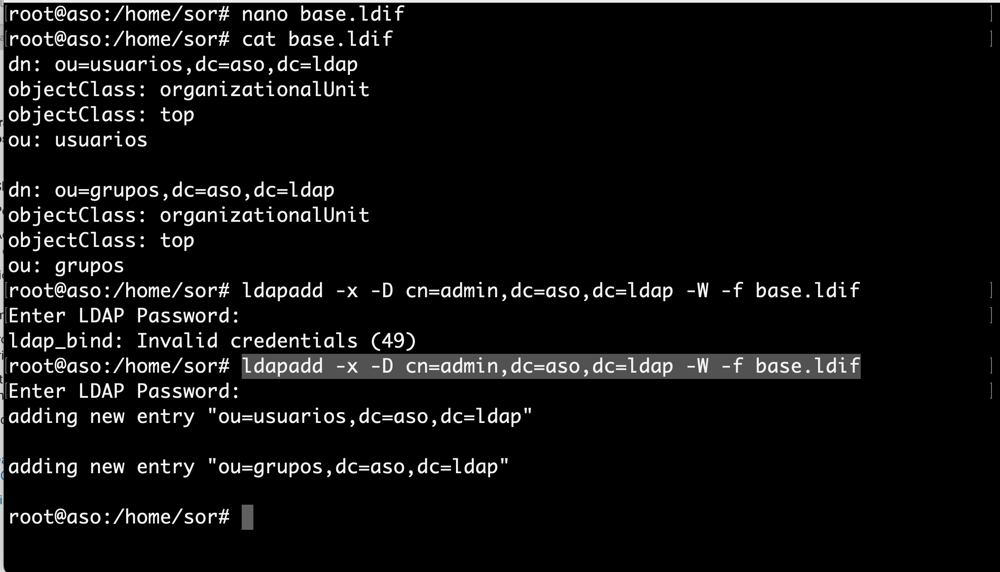
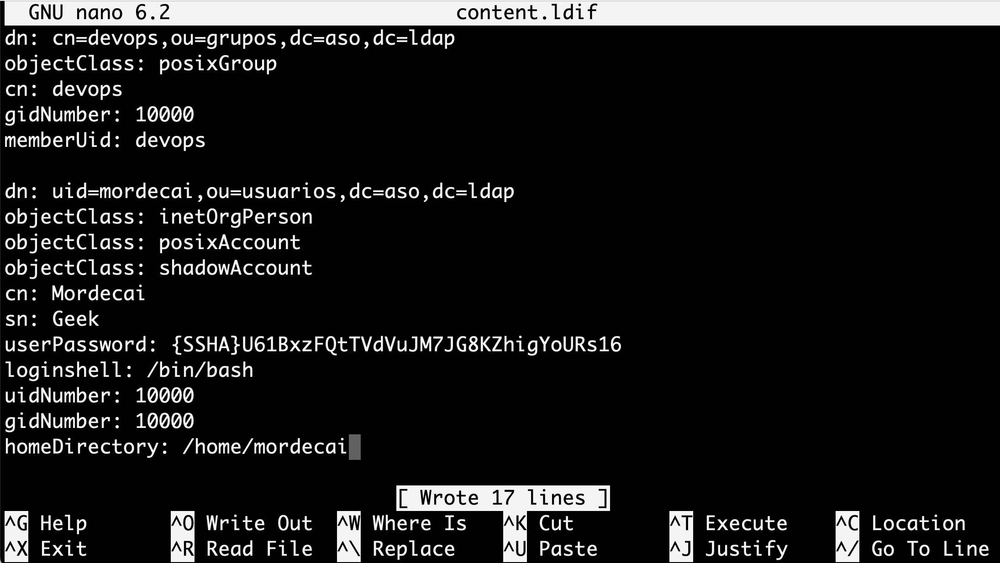
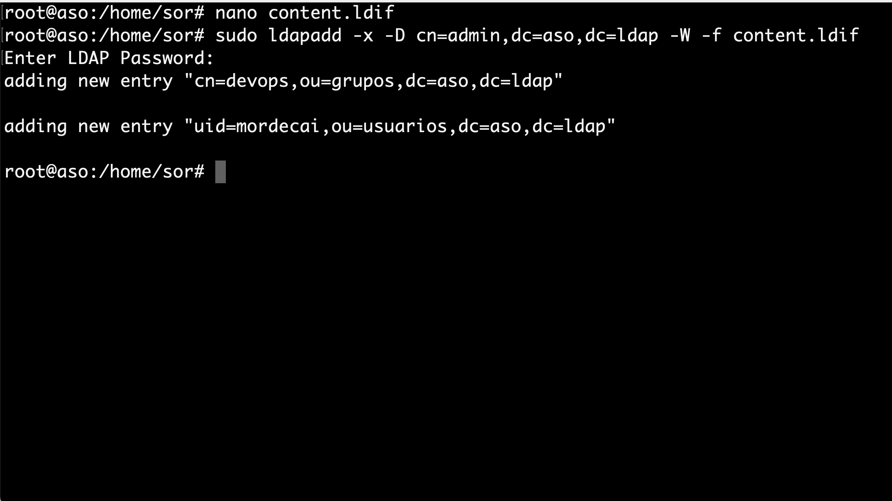

Creación de usuarios y grupos OpenLDAP¶
Con el servicio instalado y configurado, el siguiente paso es crear la estructura básica del directorio. Es decir, se creará la estructura jerárquica del árbol (DIT -- Directory Information Tree).
- Una de las formas más sencillas de añadir entradas al directorio es mediante ficheros LDIF (LDAP Data Interchange Format).
- Básicamente se tratan de ficheros en texto plano con un formato particular que debemos conocer para poder construirlos correctamente. El formato básico de una entrada es el siguiente:
# comentario
dn: <nombre distintivo único>
<atributo>: <valor>
<atributo>: <valor>
...
base.ldif¶
- Teniendo en cuenta lo anteriormente mencionado, procedemos a crear un fichero base que contenga los tipos de objetos básicos del directorio.
nano base.ldif
- Se genera el base.ldif siguiendo las siguientes premisas:
- En el LDIF se crean dos entradas referentes a unidades organizativas: «usuarios» y «grupos».
- Las unidades organizativas, como su propio nombre indica, son atributos que nos van a servir para estructurar de forma idónea el árbol del directorio LDAP.
- Estas dos entradas serán la base del árbol ya que de ellas dependerán varias entradas más adelante.
- Se genera el base.ldif con las siguientes entradas, cambiando aso por dominio de cada alumna o alumno.
dn: ou=usuarios,dc=aso,dc=ldap
objectClass: organizationalUnit
objectClass: top
ou: usuarios
dn: ou=grupos,dc=aso,dc=ldap
objectClass: organizationalUnit
objectClass: top
ou: grupos

- Una vez creado el fichero base.ldif, se procede a cargar en el directorio LDAP. Para ello se ejecuta la siguiente instrucción:
Advertencia
Importante haber anotado correctamente la contraseña introducida en la configuración del LDAP.
sudo ldapadd -x -D cn=admin,dc=aso,dc=ldap -W -f base.ldif

- Una vez cargadas las entradas, se a procede a crear nuevas entradas que colgarán de las unidades organizativas que acabamos de crear. Se crea una entrada para un grupo y una entrada para un usuario.
Consejo
Antes que nada, como buena práctica de seguridad, se genera una contraseña cifrada para asignárselas a los usuarios en el fichero LDIF que se va a crear. Para ello se ejecuta el siguiente comando:
slappasswd
- Se escribe la contraseña dos veces y nos devolverá la misma cifrada por el algoritmo criptográfico SSHA.

content.ldif¶
- A continuación se utiliza la contraseña cifrada en el fichero content.ldif, donde se crean dos entradas:
- Un grupo llamado devops que colgará de la unidad organizativa grupos.
- Un usuario llamado mordecai que colgará de la unidad organizativa usuarios y a su vez pertenecerá al grupo devops.
nano content.ldif
- Se puede copiar el siguiente archivo modificado el dominio y contraseña correspondiente en cada caso.
dn: cn=devops,ou=grupos,dc=aso,dc=ldap
objectClass: posixGroup
cn: devops
gidNumber: 10000
memberUid: devops
dn: uid=mordecai,ou=usuarios,dc=aso,dc=ldap
objectClass: inetOrgPerson
objectClass: posixAccount
objectClass: shadowAccount
cn: Mordecai
sn: Geek
userPassword: {SSHA}U61BxzFQtTVdVuJM7JG8KZhigYoURs16
loginshell: /bin/bash
uidNumber: 10000
gidNumber: 10000
homeDirectory: /home/mordecai

- De la misma forma que anteriormente, se procede a cargar las entradas en el directorio LDAP ejecutando la siguiente instrucción:
sudo ldapadd -x -D cn=admin,dc=aso,dc=ldap -W -f content.ldif

En este punto ya se tiene una estructura jerárquica del árbol creada de la siguiente manera (sustituyendo pandora por el correspondiente dominio):

Para poder ver las diferentes entradas que forman nuestro directorio LDAP ejecutamos el comando slapcat.
sudo slapcat
root@aso:/home/sor# slapcat
dn: dc=aso,dc=ldap
objectClass: top
objectClass: dcObject
objectClass: organization
o: aso
dc: aso
structuralObjectClass: organization
entryUUID: be2252ee-f335-103c-895b-fdc9e52a62b4
creatorsName: cn=admin,dc=aso,dc=ldap
createTimestamp: 20221107221742Z
entryCSN: 20221107221742.637560Z#000000#000#000000
modifiersName: cn=admin,dc=aso,dc=ldap
modifyTimestamp: 20221107221742Z
dn: ou=usuarios,dc=aso,dc=ldap
objectClass: organizationalUnit
objectClass: top
ou: usuarios
structuralObjectClass: organizationalUnit
entryUUID: 9cec530a-f339-103c-8382-ab30731258a0
creatorsName: cn=admin,dc=aso,dc=ldap
createTimestamp: 20221107224524Z
entryCSN: 20221107224524.905787Z#000000#000#000000
modifiersName: cn=admin,dc=aso,dc=ldap
modifyTimestamp: 20221107224524Z
dn: ou=grupos,dc=aso,dc=ldap
objectClass: organizationalUnit
objectClass: top
ou: grupos
structuralObjectClass: organizationalUnit
entryUUID: 9cee76a8-f339-103c-8383-ab30731258a0
creatorsName: cn=admin,dc=aso,dc=ldap
createTimestamp: 20221107224524Z
entryCSN: 20221107224524.919838Z#000000#000#000000
modifiersName: cn=admin,dc=aso,dc=ldap
modifyTimestamp: 20221107224524Z
dn: cn=devops,ou=grupos,dc=aso,dc=ldap
objectClass: posixGroup
cn: devops
gidNumber: 10000
memberUid: devops
structuralObjectClass: posixGroup
entryUUID: 66e8da30-f33e-103c-8384-ab30731258a0
creatorsName: cn=admin,dc=aso,dc=ldap
createTimestamp: 20221107231941Z
entryCSN: 20221107231941.769744Z#000000#000#000000
modifiersName: cn=admin,dc=aso,dc=ldap
modifyTimestamp: 20221107231941Z
dn: uid=mordecai,ou=usuarios,dc=aso,dc=ldap
objectClass: inetOrgPerson
objectClass: posixAccount
objectClass: shadowAccount
cn: Mordecai
sn: Geek
userPassword:: e1NTSEF9VTYxQnh6RlF0VFZkVnVKTTdKRzhLWmhpZ1lvVVJzMTY=
loginShell: /bin/bash
uidNumber: 10000
gidNumber: 10000
homeDirectory: /home/mordecai
structuralObjectClass: inetOrgPerson
uid: mordecai
entryUUID: 66ed8418-f33e-103c-8385-ab30731258a0
creatorsName: cn=admin,dc=aso,dc=ldap
createTimestamp: 20221107231941Z
entryCSN: 20221107231941.800307Z#000000#000#000000
modifiersName: cn=admin,dc=aso,dc=ldap
modifyTimestamp: 20221107231941Z